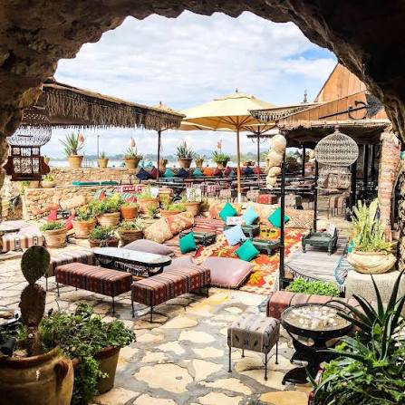
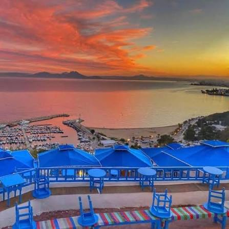
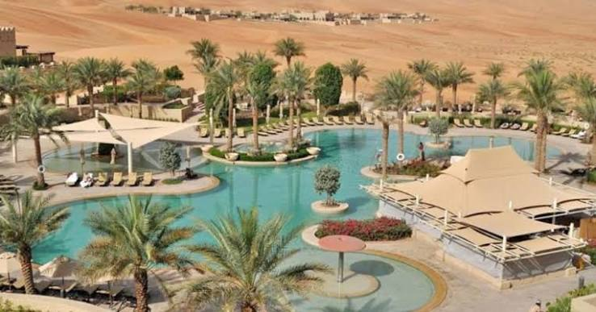

Tableau des Regions Touristiques
Voici un apercu de nos services par region.
| image | Region | Ville & Service | |
|---|---|---|---|
 |
Nord | Hammamet | cafe mer |
 |
Sidi Bou Said | ||
 |
Sud | Excursion dans le desert de Tozeur | |